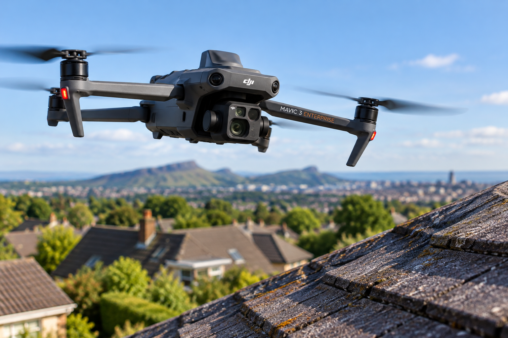

AI-Powered Roof Inspections, Professionally Reviewed
GVC-Qualified Drone Pilot · Safety-Focused Aerial Inspections
Intelligent roof inspections using professional drone technology and specialised artificial intelligence software designed to identify potential roof defects. Every customer report is then reviewed and signed off by a professional roofer based on the visible imagery.
Request a Roof InspectionA Smarter Approach to Roof Inspections
Traditional roof inspections can involve ladders, scaffolding and working at height.
Lothian Drones offers an alternative approach, combining detailed aerial photography with artificial intelligence software developed specifically for roof analysis.
Our drones capture detailed images of accessible roof areas without requiring someone to physically climb onto the roof during the initial inspection.
These images are then analysed using specialised AI software designed to identify and highlight potential roofing defects.
The results are presented in an inspection report, helping property owners understand where further investigation or maintenance may be required.
How Our Inspection Process Works
1. Aerial Inspection
We use drone technology to capture detailed photographs of the property's roof.
2. AI Analysis
The captured imagery is processed using specialist artificial intelligence software designed to detect potential roof defects.
3. Professional Roofer Review
A professional roofer reviews the imagery and AI findings, then signs off the report before it is sent to you.
4. Your Inspection Report
Receive a clear report highlighting visible concerns and recommended next steps, which you can use when planning maintenance or repairs.
Roof Inspections for Every Property Type
Homeowners
Understanding the condition of your roof shouldn't automatically mean arranging scaffolding or sending someone onto the roof.
Our drone-based inspection service offers homeowners a convenient way to investigate potential roof problems.
Whether you are concerned about missing tiles, visible deterioration or general roof condition, our AI-assisted inspection can help identify areas that may need attention.
Businesses & Commercial Properties
Commercial buildings often have large or difficult-to-access roof areas.
Drone inspections can support property maintenance planning by providing aerial imagery and AI-assisted identification of potential defects.
Our service is suitable for offices, commercial premises, industrial buildings and managed property portfolios.
Local Authorities & Housing Organisations
Managing multiple properties requires an organised approach to inspection and maintenance.
Lothian Drones can discuss inspection requirements for schools, offices, housing stock and other managed buildings.
Drone imagery and AI-assisted reports can provide useful information to support property maintenance assessments.
Specialist AI Roof Analysis
Our inspection service uses artificial intelligence software specifically designed to analyse roof imagery and highlight potential faults.
Rather than simply providing aerial photographs, the software assists in identifying areas of concern within the captured imagery.
This gives customers more structured information about potential roofing issues and helps identify areas that may require closer attention.
AI Analysis with Professional Roofer Sign-Off
Every customer report combines specialist AI-assisted roof analysis with a professional roofer’s review and sign-off of the visible findings.
The report can be shared with a roofing contractor to help explain potential issues and support discussions about further investigation or repairs.
Important: AI analysis and professional review are limited to what is visible in the drone imagery. Hidden defects cannot be ruled out, and an on-site inspection may still be necessary.
View a Sample Roof Inspection Report
See an example of our roof inspection reporting format, including an illustrative roofer sign-off. Use the buttons to browse all three pages. This is a demonstration report with fictional property and sign-off details.
Why Choose Drone Roof Inspections?
Reduced Working at Height
Aerial inspections can reduce the need for physical roof access during initial assessments.
Detailed Aerial Imagery
Drone photography provides useful visual information about accessible roof areas.
Intelligent Analysis
Specialist AI software helps identify potential defects within roof imagery.
Practical Reporting
Receive findings that can help inform maintenance decisions and discussions with roofing contractors.
Request an AI Roof Inspection
Whether you own a home, manage commercial premises or oversee a property portfolio, Lothian Drones can discuss your inspection requirements.
Contact us with details of your property to request further information or a quotation.
Enquire About an InspectionLothianDrones@gmail.com